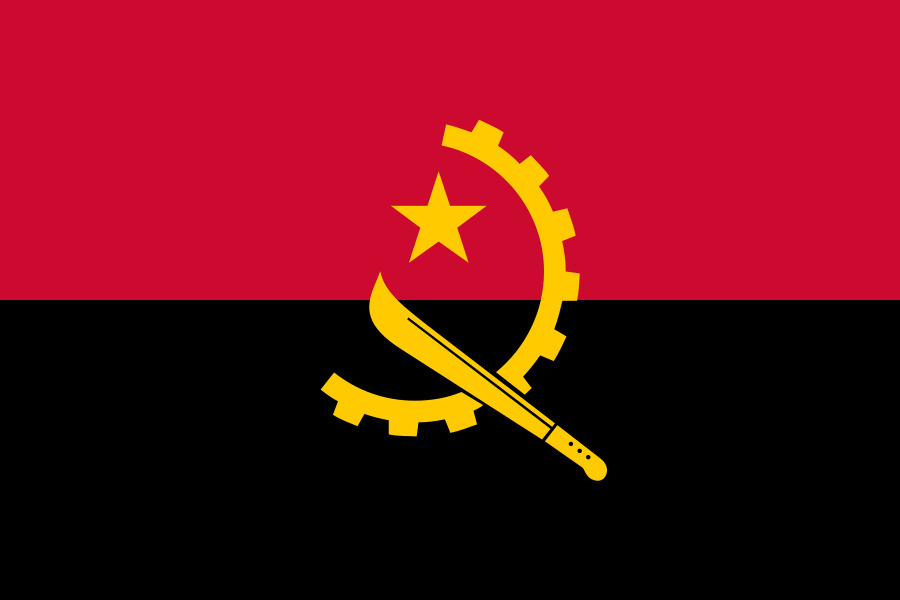
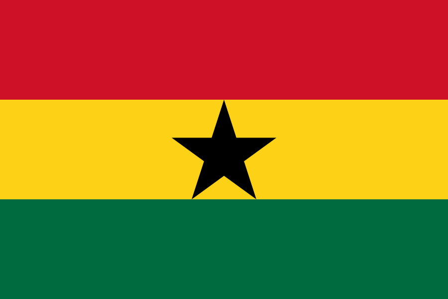
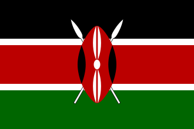
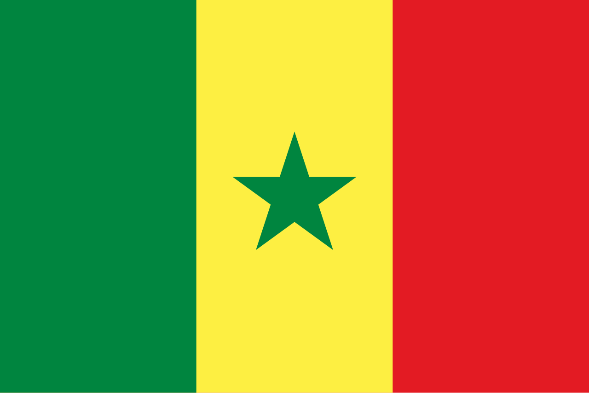
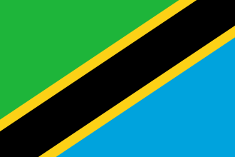

A África é o terceiro maior continente do mundo, com cerca de 30 milhões de km²
(20% da terra firme) e 54 países soberanos reconhecidos.
Considerado o berço da humanidade, possui uma população jovem e multicultural, superando 1,4 bilhão
de habitantes. É marcado por enorme diversidade geográfica, incluindo o Saara, savanas e a bacia do Congo.
Geografia: É atravessada pela Linha do Equador e pelos trópicos, apresentando climas que variam do equatorial ao desértico.
O relevo é predominantemente composto por planaltos, com destaque para o Grande Vale do Rift.
Economia: A economia baseia-se na exportação de recursos naturais (minérios e petróleo), com forte
presença da agropecuária, mas sofre com a exploração externa e infraestrutura limitada.
Países: Argélia, Egito, Líbia, Marrocos, Sudão, Sudão do Sul, Tunísia,
Benim, Burkina Faso, Cabo Verde, Costa do Marfim,
Gâmbia, Gana, Guiné, Guiné-Bissau, Libéria, Mali, Mauritânia, Níger, Nigéria, Senegal, Serra Leoa, Togo
Angola, Burundi, Camarões, Chade, Gabão,
Guiné Equatorial, República Centro-Africana, República Democrática do Congo, República do Congo, Ruanda e São Tomé, Príncipe, Burundi, Djibuti, Eritreia,
Etiópia, Quênia, Ruanda, Somália, Tanzânia, Uganda, Ilhas Comores, Madagascar, Maurício, Seychelles,África do Sul, Botsuana, Lesoto, Namíbia, Eswatini (Suazilândia), Zâmbia e Zimbábue.
Clima: O clima da África é predominantemente quente e seco, influenciado pelo fato de grande parte do continente estar
situada na zona tropical, entre o Trópico de Câncer e o Trópico de Capricórnio, sendo cortado pela Linha do Equador. A distribuição dos climas é, em geral, espelhada ao norte e ao sul do Equador.
Cultura:A cultura africana é um conjunto vasto, diverso e milenar de tradições, línguas, religiões e expressões
artísticas, englobando mais de 50 países e centenas de etnias no continente. Caracteriza-se por forte ancestralidade, coletividade, música percussiva
(berimbau, atabaque), culinária rica (azeite de dendê) e influências profundas no Brasil.
População: Aproximadamente 1,57 bilhão de habitantes
Maior País Argélia, com cerca de 2.381.741 km².
Curiosidade: Com mais de 54 nações, o continente é extremamente diverso, com mais de 2.000 línguas faladas, além de idiomas
europeus como inglês, francês e português.


|
A África abriga maravilhas naturais inigualáveis, destacando-se o Delta do Okavango, a Cratera de |